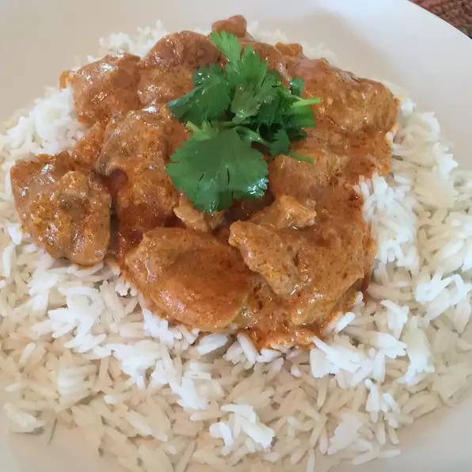

Indian Butter Chicken (Chicken Makhani)

Description
Chicken Makhani is a full flavored dish. It can be made as mild or spicy as you wish by adjusting the cayenne. Serve with basmati rice and naan bread.
Ingredients
- 1 tablespoon peanut oil
- 1 shallot, finely chopped
- 1/4 white onion, chopped
- 2 tablespoons butter
- 2 teaspoons lemon juice
- 1 tablespoon ginger garlic paste
- 1 teaspoon garam masala
- 1 teaspoon chili powder
- 1 teaspoon ground cumin
- 1 bay leaf
- 1/4 cup plain yogurt
- 1 cup half-and-half
- 1 cup tomato puree
- 1/4 teaspoon cayenne pepper, or to taste
- 1 pinch salt
- 1 pinch black pepper
- 1 tablespoon peanut oil
- 1 pound boneless, skinless chicken thighs, cut into bite-size pieces
- 1 tablespoon cornstarch
- 1/4 cup water
Steps
- Heat 1 tablespoon oil in a large saucepan over medium high heat. Saute shallot and onion until soft and translucent. Stir in butter, lemon juice, ginger-garlic paste, 1 teaspoon garam masala, chili powder, cumin and bay leaf. Cook, stirring, for 1 minute. Add tomato sauce, and cook for 2 minutes, stirring frequently. Stir in half-and-half and yogurt. Reduce heat to low, and simmer for 10 minutes, stirring frequently. Season with salt pepper. Remove from heat and set aside.
- Heat 1 tablespoon oil in a large heavy skillet over medium heat. Cook chicken until lightly browned, about 10 minutes. Reduce heat, and season with 1 teaspoon garam masala and cayenne. Stir in a few spoonfuls of sauce, and simmer until liquid has reduced, and chicken is no longer pink. Stir cooked chicken into sauce.
- Mix together cornstarch and water, then stir into the sauce. Cook for 5 to 10 minutes, or until thickened.